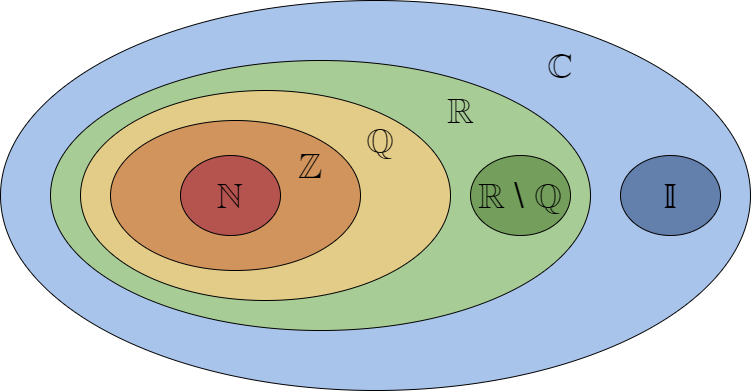

To understand the sets of numbers, we must begin with some basic set theory. A set is a group that contains elements, denoted by set braces and interior comma separated values (CSV) called elements; for example, {x, y, z} is a set containing elements x, y, and z.
Writing out an entire set each time we want to refer to it can be tedious, even more so when the set is large; so, it is standard to name sets as follows (using our example):
*Note we will use lots of Mathematical Notation (covered next section)
This way we can simply refer to the set by stating its name (S, rather than {x, y, z}). Doing so is especially useful when the "element of" operator is concerned.
element of is denoted by "∈ " and is an operator to express membership. Considering our example: it is easy to see that x is an element of the set, S; namely, x ∈ S.
What about infinite sets? Luckily, there exist standard notations for such sets, but first we must define a few types of numbers:
In order to define the sets properly, we will introduce a simple notation called Set Builder Notation, defined as follows:
Set Builder Notation:
Now, for the sets:
*Note the + or - superscript may be applied to a set to imply the set of positives or the set of negatives. E.x., ℤ+ is the set of all positive integers
Below is a venn diagram of the sets:
*Note ℂ contains all the other sets because (a = 0) ⇒ bi ∈ 𝕀, and (b = 0) ⇒ a ∈ ℝ
Activity 1) Where do I belong?
1. What is the most specific set that 16 belongs to?
2. Which number is a complex number?
3. What is the symbol for the set of rational numbers?
4. {x ∈ ℝ | x ≤ 6} is the set of all real numbers less than or equal to 6
5. ln(π) + √2 /ecos(28) ∈ ℝ
| Your answer | Correct answer | ||
|---|---|---|---|
| 1. | ℕ | ||
| 2. | All of the above | ||
| 3. | ℚ | ||
| 4. | True | ||
| 5. | True |